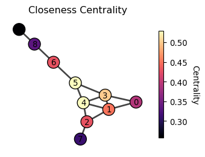
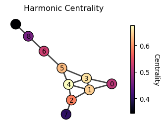
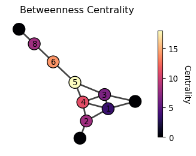
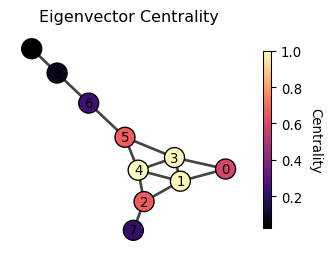
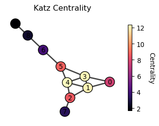
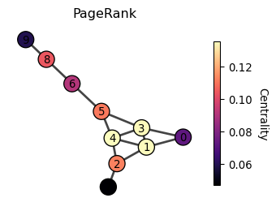
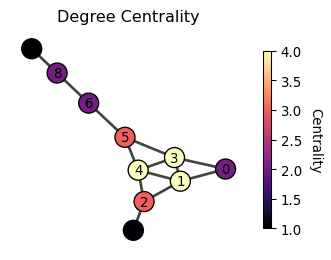

Centrality Concepts
1 What is centrality?
Have you ever wondered who the most popular person in your school is? Or which idea is the most important in a subject? Or maybe which movie everyone’s talking about right now? These questions are all about finding out what’s important in a network of people, ideas, or things. In network science, we call this centrality.
Centrality or importance is a question of how important a node is in a network. But the notion of importance is somewhat vague. In what sense we say a node is important?
Exercise
Try out the pen and paper exercise below to get a sense of centrality: School exercises

2 Distance-based centrality

Let’s talk about an ancient Roman monument called the Milliarium Aureum, also known as the Golden Milestone. It was the starting point for measuring distances on all major roads in the Roman Empire. Emperor Augustus built it when Rome changed from a republic to an empire. The monument not only marked the distances but also represent a centralization of power, where Rome transitioned from a Republic to an Empire. Perhaps the Romans understood the importance of being central in terms of distance, and this concept can be applied to define centrality in networks.
This family of centrality measures is based on shortest path distances between nodes. They consider a node important if it has short distances to other nodes or if it lies on many shortest paths.
Closeness centrality
Closeness centrality measures how close a node is to all other nodes in the network. A node is central if it is close to all other nodes, which is operationally defined as
c_i = \frac{N - 1}{\sum_{j = 1}^N \text{shortest path length from } j \text{ to } i}
where N is the number of nodes in the network. The numerator, N - 1, is the normalization factor to make the centrality have a maximum value of 1.
Question: What would be a graph where a node has the maximum closeness centrality of value 1?
Click to see the answer
The simplest example is a star graph, where one node is connected to all other nodes. The node at the center has the highest closeness centrality.

Harmonic centrality
The closeness centrality falls short for disconnected networks. This is because the shortest distance between two nodes in different connected components is infinite, making the closeness centrality of all nodes in the disconnected components zero.
A remedy is Harmonic centrality which adjusts closeness centrality (Beauchamp 1965) which is defined as
c_i = \sum_{j\neq i} \frac{1}{\text{shortest path length from } j \text{ to } i}

The distance between two nodes in different connected components has zero contribution to the harmonic centrality, making it a useful measure for disconnected networks.
Eccentricity centrality
While the closeness and harmonic centralities focus on “average” distance, eccentricity centrality focuses on the farthest distance from a node to any other node. It is defined as
c_i = \frac{1}{\max_{j} \text{shortest path length from } i \text{ to } j}

When is eccentricity centrality useful?
Unlike closeness or harmonic centrality, eccentricity centrality optimizes for the worst-case scenario, making it ideal when equity and maximum response times are critical. For example, placing emergency services or facilities to ensure no location is too far from help, designing robust communication or transportation networks that remain connected even if parts fail, and positioning distribution centers to guarantee reasonable delivery times to the most remote customers.
Betweenness centrality
Betweenness centrality considers that a node is important if it lies on many shortest paths between other nodes.
c_i = \sum_{j < k} \frac{\sigma_{jk}(i)}{\sigma_{jk}}

where \sigma_{jk} is the number of shortest paths between nodes j and k, and \sigma_{jk}(i) is the number of shortest paths between nodes j and k that pass through node i.
3 Walk-based centrality
“A man is known by the company he keeps” is a quote from Aesop who lived in the ancient Greece, a further back in time from the Roman Empire. It suggests that a person’s character is reflected by the people this person is friends with. This idea can be applied to define the centrality of a node in a network.
This family of centrality measures considers that a node is important if it is connected to other important nodes, or if it receives many “walks” or “votes” from other nodes in the network. These measures often use recursive definitions and are computed using linear algebra techniques.
Aesop was an ancient Greek storyteller believed to have lived around the 6th century BCE. He is famous for his fables—short stories that use animals and everyday situations to teach moral lessons.

Eigenvector centrality
Eigenvector centrality considers that a node is important if it is connected to other important nodes. Yes, it sounds like circular! But it is actually computable! Let us define it more precisely by the following equation.
\lambda c_i = \sum_{j} A_{ij} c_j
where \lambda is a constant. It suggests that the centrality of a node (c_i), when multiplied by a constant \lambda, is the sum of the centralities of its neighbors (A_{ij} c_j; note that A_{ij}=1 if j is a neighbor, and otherwise A_{ij}=0). Using vector notation, we can rewrite the equation as
\lambda \begin{bmatrix} c_1 \\ c_2 \\ \vdots \\ c_n \end{bmatrix} = \begin{bmatrix} A_{11} & A_{12} & \cdots & A_{1n} \\ A_{21} & A_{22} & \cdots & A_{2n} \\ \vdots & \vdots & \ddots & \vdots \\ A_{n1} & A_{n2} & \cdots & A_{nn} \end{bmatrix} \begin{bmatrix} c_1 \\ c_2 \\ \vdots \\ c_n \end{bmatrix}
or equivalently,
\lambda \mathbf{c} = \mathbf{A} \mathbf{c}
Okay, but how do we solve this? Well, this is the standard eigenvector equation! The solution \mathbf{c} is an eigenvector of the adjacency matrix \mathbf{A}, and \lambda is its corresponding eigenvalue. But here’s the tricky part - a matrix can have multiple eigenvectors. So which one should we choose?
Let’s think about what we want again. We want our centrality measure to be positive. It wouldn’t make much sense to have negative importance! So, we’re looking for an eigenvector where all the elements are positive. And a good news is that there’s a special eigenvector that fits the bill perfectly. The Perron-Frobenius theorem guarantees that the eigenvector associated with the largest eigenvalue always has all positive elements.

Perron-Frobenius theorem: For a regular matrix \mathbf{A} with and non-negative entries (A_{ij} \geq 0), there exists a unique largest eigenvalue r > 0 such that its corresponding eigenvector \mathbf{v} has all positive entries: v_i > 0 for all i.
Thus, the eigenvector centrality is the eigenvector of the adjacency matrix associated with the largest eigenvalue.
Hyperlink-Induced Topic Search (HITS) centrality
HITS centrality extends eigenvector centrality to directed networks. It introduces two notions of importance: hub and authority. A node is an important hub if it points to many important authorities. A node is an important authority if it is pointed by many important hubs.
Let’s put on a math hat to concretely define the hub and authority centralities. We introduce two vectors, x_i and y_i, to denote the hub and authority centralities of node i, respectively. Following the idea of eigenvector centrality, we can define the hub and authority centralities as follows:
x_i = \lambda_x \sum_j A_{ji} y_j, \quad y_i = \lambda_y \sum_j A_{ij} x_j
Or equivalently,
\mathbf{x} = \lambda_x \mathbf{A}^T \mathbf{y}, \quad \mathbf{y} = \lambda_y \mathbf{A} \mathbf{x}
Substituting \mathbf{y} = \lambda_y \mathbf{A} \mathbf{x} into the first equation and similar for \mathbf{x}, we get
\mathbf{x} = \lambda_x \mathbf{A}^T \mathbf{A} \mathbf{x}, \quad \mathbf{y} = \lambda_y \mathbf{A} \mathbf{A}^T \mathbf{y}
Again, we obtain the eigenvector equations whose solutions are the eigenvectors of \mathbf{A}^T \mathbf{A} and \mathbf{A} \mathbf{A}^T for \mathbf{x} and \mathbf{y}, respectively.
If the original network is undirected, is the HITS centrality equivalent to the eigenvector centrality? If so or not, explain why.
Katz centrality
Katz centrality addresses a limitation of eigenvector centrality, which tends to pay too much attention to a small number of nodes that are well connected to the network while under-emphasizing the importance of the rest of the nodes. The solution is to add a little bit of score to all nodes.
c_i = \beta + \lambda \sum_{j} A_{ij} c_j
The equation can be solved by
\mathbf{c} = \beta \mathbf{1} + \lambda \mathbf{A} \mathbf{c}
where \mathbf{1} is the vector of ones. By rewriting the equation, we get
\left( \mathbf{I} - \lambda \mathbf{A} \right) \mathbf{c} = \beta \mathbf{1}
By taking the inverse of \mathbf{I} - \lambda \mathbf{A}, we get
$ = ( - )^{-1} $$

PageRank
PageRank is the celebrated idea behind Google Search and can be seen as a cousin of Katz centrality.
c_i = \underbrace{(1-\beta) \sum_j A_{ji}\frac{c_j}{d^{\text{out}}_j}}_{\text{Random walk from neighbors}} + \underbrace{\beta \cdot \frac{1}{N}}_{\text{teleportation}}

where d^{\text{out}}_j is the out-degree of node j (the number of edges pointing out from node j). The term c_j/d^{\text{out}}_j represents that the score of node j is divided by the number of nodes to which node j points. In the Web, this is like a web page distributes its score to the web pages it points to. It is based on an idea of traffic, where the viewers of a web page are evenly transferred to the linked web pages. A web page is important if it has a high traffic of viewers.
See the following video for more details on PageRank:
Personalized PageRank
Personalized PageRank extends the standard PageRank algorithm by contextualizing the importance of nodes from a specific perspective in a network. To understand this, imagine you have a network of movies connected by similarity (sharing genres, actors, directors, etc.). Standard PageRank would rank movies based on their overall centrality in this similarity network. But suppose a student just watched “The Matrix” and wants to find similar movies. Personalized PageRank would start random walks from “The Matrix” and measure which movies are most reachable from it, effectively finding movies that are similar to “The Matrix” rather than just globally popular movies.
Put it more formarmally, suppose a random walker starting from a node \ell. The walker moves to the neighboring nodes just like in PageRank, but with a probability \beta, it goes back to the starting node \ell at every step.
Thus, c_i = \underbrace{(1-\beta) \sum_j A_{ji}\frac{c_j}{d^{\text{out}}_j}}_{\text{Random walk from neighbors}} + \underbrace{\beta \cdot p_{\ell}}_{\text{Teleport to the starting node}}
where p_{\ell} is a one-hot vector that is 1 at the \ell-th position and 0 elsewhere. The first term represents This equation can be solved numerically by taking the power iteration like we do for the PageRank. Alternatively, we can solve it by solving the linear system of equations.
Personalized PageRank can also be interpreted as the sum of probabilities of reaching each node from a focal set of nodes, where the probability decreases exponentially with distance. Let p_{\ell i}^{(k)} be the probability of reaching node i from node \ell in k steps. Then, the personalized PageRank is given by
c_i = \sum_{k=0}^{\infty} \beta (1-\beta)^k p_{\ell i}^{(k)}
where ther term \beta (1-\beta)^k is the probability of reaching a node that is exactly k steps away. Think of it as a “weight” that decreases with distance. As i gets further away from the starting node \ell. In other words, centrality of node i tends to be higher if it is closer to the starting node \ell.
PageRank and Personalized PageRank have been one of the most influential ideas in network science. There are many variants and extensions of these ideas. Here are some of my favorites:
(Lambiotte and Rosvall 2012) proposes a teleportation method that corrects the bias coming from the degree of the starting node of PageRank.
(Wu et al. 2017) proposes a second-order random walk-based proximity measure that considers the importance of a node in the context of a ranking problem.
(Tong, Faloutsos, and Pan 2006) proposes a random walk with restart that considers the importance of a node in the context of a ranking problem.
4 Degree-based centrality
The simplest approach to measuring centrality is to count the connections of each node. This gives us degree centrality, which considers a node important if it has many direct connections. Degree centrality is just the count of the number of edges connected to a node (i.e., the number of neighbors, or degree in network science terminology). The most important node is thus the one with the highest degree.
c_i = d_i = \sum_{j} A_{ij}

where A_{ij} is the adjacency matrix of the network, and d_i is the degree of node i.
Degree centrality is a no brainer measure of centrality. Interestingly, degree centralities are often strongly correlated with other centrality measures, such as the eigenvector centrality, pagerank, along with distance-based centralities (e.g., closeness centrality). Of course, degree centrality is a crude importance measure as it only focuses on the direct connections of a node and ignores who these connections are to.
to.
References
Beauchamp, Murray A. 1965. “An Improved Index of Centrality.” Behavioral Science 10 (2): 161–63.
Lambiotte, R., and M. Rosvall. 2012. “Ranking and clustering of nodes in networks with smart teleportation.” Physical Review E 85 (5). https://doi.org/10.1103/physreve.85.056107.
Tong, Hanghang, Christos Faloutsos, and Jia-yu Pan. 2006. “Fast Random Walk with Restart and Its Applications.” In Sixth International Conference on Data Mining (ICDM’06). Ieee. https://doi.org/10.1109/icdm.2006.70.
Wu, Yubao, Xiang Zhang, Yuchen Bian, Zhipeng Cai, Xiang Lian, Xueting Liao, and Fengpan Zhao. 2017. “Second-order random walk-based proximity measures in graph analysis: formulations and algorithms.” The VLDB Journal 27 (1): 127–52. https://doi.org/10.1007/s00778-017-0490-5.